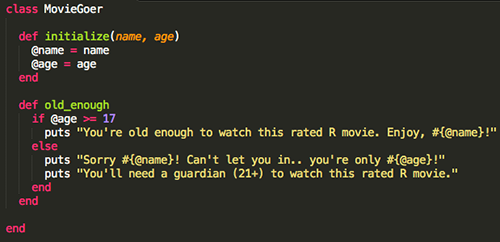
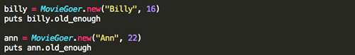

"Class" Is In Session
A crash course on when, why, and how to use Ruby classes
Every object in Ruby is an instance of a class. For example, the string "hello world" is an instance of the String class. We recognize the name String as a class because of it's capitalized "S." Ruby class names begin with a capitalized letter and follow camel case rules for names with mutliple words (i.e. MyClass). However, if you don't know an object's class and want to find out, you can call the #class method on that object, like so: 77.class - the output is Fixnum. These examples include built-in Ruby classes, but you can also write your own classes. Let's first take a step back and explain what Ruby classes are in more detail.
A Ruby class houses a collection of behaviors, otherwise known as methods. These behaviors are applied to all objects that are created as instances of that class, which is especially useful when we create multiple objects that we need to behave in similar ways. Take a look at the example of a class below. Don't worry if it looks confusing, we'll go through it step-by-step to figure out what it's doing.

In the example above we are creating a class that will help us check whether or not a certain movie goer is old enough to watch a rated R movie. To do this, we first defined a class by using the class keyword followed by a name of our choice. (Remember, the name begins with a capital letter and follows camel case rules).
Next, we created an initialize method to ensure every time an instance of MovieGoer is created, it has a name and, more importantly, an age passed in as arguments. Creating an instance of class looks a like this:
.new is called on MovieGoer to create a new object that is an instance of the MovieGoer class. This new object is assigned to the variable billy. The argument "Billy" is assigned to the instance variable @name and the argument 16 is assigned to the instance variable @age. (Instance variables start with an "@" symbol and allow us to access them in other methods within the same class. If we used a local variable, it would only have local scope and couldn't be accessed again in our old_enough method). These instance variables were assigned as soon as we created the object billy. Any time a new instance of a class is created, the initialize method is always run first.
Finally, we created an instance method old_enough, which checks if the movie goer's age is greater than or equal to 17 and puts an approval/disapproval statement accordingly. An instance method simply refers to a method that is defined within a class. However, instance methods are powerful in that they can be called on any instance of the class in which they're defined. This means, we can create a new instance of the class MovieGoer and call the same method on the object ann as we can on the object billy.

Though we only have one method in our MovieGoer class, we could define many more. For example, checking the age of a movie goer to see if they're eligible for PG-13 movies if not rated R movies. Or, we could expand the old_enough method to see if they have a guardian with them, making them eligible to watch the rated R movie. No matter how many methods we define in the class though, they will all be accessible by any object that is an instance of that class. You can even call methods within other methods in the same class so that they work and communicate with each other. This capacity is what makes classes so useful and so powerful.